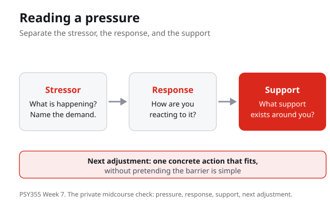

What Do You Know?
1. This week names stress, adversity, and recovery as:
2. The central question for the week is:
3. In Lopez (2021), adversity is described as:
4. The private midcourse check asks students to name four things:
5. The goal of the week is to make the psychology useful without:
6. Cassidy (2015) connects resilience building in students to:
7. A good action a student could try this week is one that:
Purpose and Learning Outcomes
The purpose of this week is to connect psychological theory to practical learning, well being, and resilience. The work stays grounded in course sources and uses everyday academic examples so the concepts can travel beyond class.
By the end of this week you should be able to
- Differentiate stress, adversity, and recovery.
- Use resilience concepts to analyse a learning pressure.
- Prepare a midcourse adjustment plan.
Guiding Questions
- How can students recognize pressure without letting pressure become the whole story?
- What does this week show about stress?
- Where does the model help, and where does it need context?
- What is one concrete action a student could try without pretending the barrier is simple?

Linked but Distinct
This week consolidates the first half by naming stress, adversity, and recovery as linked but distinct. Stress is the pressure you feel in the moment. Adversity is the barrier or hardship you face. Recovery is the ordinary way you steady again. Keeping them apart is what lets you read a situation clearly instead of treating one bad feeling as the whole story.
Stress, adversity, and recovery are linked but distinct. Naming them separately is what keeps a single pressure from becoming the whole story.
In a recent academic pressure, can you separate the stress, the adversity, and the recovery rather than blurring them together?
Recognizing Pressure
The central question is how students can recognize pressure without letting pressure become the whole story. Naming a pressure is not the same as being defined by it. The week uses a short lecture frame, source guided reading, guided notes, and one low stakes practice activity. The goal is to make the psychology useful without turning the week into a personal disclosure task.
Recognizing pressure is not the same as being ruled by it. The week stays descriptive, not confessional, so the psychology stays useful.
When a pressure feels large, what helps you name it without letting it become the only thing you can see?

Adversity as Social Ecology
Lopez describes adversity as social ecology rather than individual weakness. A barrier sits inside a context of supports and conditions, not only inside a person. Weight studies adversity and resiliency in student experience, and Cassidy connects resilience building in students to academic self-efficacy. Read across the three: where does the model help, and where does it need context?
Adversity is social ecology rather than individual weakness. Resilience builds through context and through academic self-efficacy, not through willpower alone.
When you face a barrier, which parts sit inside the situation around you, not only inside you?
Separating Stressors, Responses, and Supports
One way to read a pressure is to separate the stressor, the response, and the support. What is happening, how are you reacting, and what support exists around you? Pulling these apart keeps a hard moment from collapsing into a single overwhelming thing, and it points toward a concrete action that fits without pretending the barrier is simple.
Separating the stressor, the response, and the support turns one overwhelming moment into parts you can read and act on.
For a current pressure, name the stressor, your response, and one support: which part is easiest to change first?
Recovery in an Ordinary Form
Recovery does not have to look dramatic. The reflection for the week asks what recovery would look like in a realistic, ordinary form this week. That is also the practice: a private midcourse check naming pressure, response, support, and one next adjustment. It is descriptive, not confessional, so it stays low stakes.
Recovery in a realistic, ordinary form is the aim. The midcourse check stays descriptive and private, so it supports the work without becoming a disclosure task.
What would recovery look like in a realistic, ordinary form for you this week?
What You Are Learning This Week
Linked But Distinct
Stress, adversity, and recovery are linked but distinct. Stress is the pressure in the moment, adversity is the barrier you face, and recovery is the ordinary way you steady again. Keeping them apart lets you read a situation without treating one bad feeling as the whole story.
Recognize Pressure Without Being Defined By It
The central question is how students can recognize pressure without letting pressure become the whole story. The week stays descriptive, not confessional, so naming a pressure becomes a tool rather than a disclosure task.
Adversity Is Social Ecology
Lopez describes adversity as social ecology rather than individual weakness, so a barrier sits inside a context of supports and conditions. Weight shows adversity and resiliency in student experience, and Cassidy ties resilience building to academic self-efficacy.
Recovery Can Be Ordinary
Recovery does not have to be dramatic. Separate the stressor, the response, and the support, then choose one concrete action that fits without pretending the barrier is simple. The private midcourse check names pressure, response, support, and next adjustment.
Connections to This Week
Earlier weeks built up the social ecology around a learner, including the conditions, supports, and contexts that shape how learning happens. Those ideas describe the setting a student is already working inside before any single pressure arrives.
This week names stress, adversity, and recovery as linked but distinct. The central question, how to recognize pressure without letting pressure become the whole story, is met by separating the stressor, the response, and the support, then choosing one realistic next adjustment.
Once a student can read a pressure and steady again in an ordinary way, the question turns toward how they treat themselves while doing it: self-compassion, and a kinder stance toward effort, setbacks, and recovery.
Reflection Corner
What would recovery look like in a realistic, ordinary form this week? Carry the question through the week, use it to prepare for class and guide your notes, and try one concrete action that fits without pretending the barrier is simple. This is not a separate assignment, and the work stays descriptive, not confessional.
Your notes save automatically on this device and stay after you close your browser or shut down. Use Save my notes (below) to download a copy you can keep or open on another device.
What You Now Know
Why does this week treat stress, adversity, and recovery as linked but distinct?
In Lopez (2021), adversity is best understood as:
The private midcourse check asks a student to name:
A good next action this week is one that:
What to Do Next
Read for the Argument
Read each source for the argument, not for every technical detail. Name the main concept each one gives you, and mark the sentence or paragraph that best helps answer how to recognize pressure without letting pressure become the whole story.
Practise Reading a Pressure
Use an everyday academic example to separate the stressor, the response, and the support. Decide one concrete action that fits without pretending the barrier is simple, and bring one question to class about how the concept works in real life.
Prepare the Midcourse Check
Complete a private midcourse check naming pressure, response, support, and next adjustment. Keep it descriptive, not confessional, and use it to picture what recovery would look like in a realistic, ordinary form this week.
References
Lopez, M., Ruiz, M. O., Rovnaghi, C. R., Tam, G. K. Y., Hiscox, J., Gotlib, I. H., Barr, D. A., Carrion, V. G., and Anand, K. J. S. (2021). The social ecology of childhood and early life adversity. Pediatric Research. DOI: 10.1038/s41390-020-01264-x.
Weight, E., Haroldson, J. M., Harry, M., and Rudd, E. (2024). Adversity and resiliency: Athlete experiences within U.S. college sport. Journal of Intercollegiate Sport. DOI: 10.17161/2fndtf13.
Cassidy, S. (2015). Resilience building in students: The role of academic self-efficacy. Frontiers in Psychology. DOI: 10.3389/fpsyg.2015.01781.